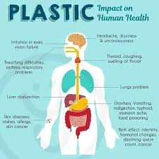

Plastic pollution has become one of the biggest environmental challenges. Plastic pollution awareness is a movement aimed at educating people about the harmful impacts of plastic waste on the environment, wildlife, and human health. As plastic production and consumption have soared over recent decades, plastic pollution has become a significant global challenge. Every year, millions of tons of plastic end up in oceans, rivers, and landfills, where it can take hundreds of years to decompose, breaking down instead into small particles known as microplastics that contaminate soil and water ecosystems.. Together, we can learn about the impact of plastic waste and make meaningful changes to protect our planet.
About Plastic Pollution
Plastic pollution is the accumulation of plastic products in the environment, harming wildlife, marine life, and human health. Every year, millions of tons of plastic waste end up in our oceans, where it does not decompose and instead breaks down into harmful microplastics.Here are some key aspects of plastic pollution:
1. Sources of Plastic Pollution
Single-use Plastics: These include items like plastic bags, bottles, straws, and packaging, which are designed for single use and often end up in landfills or the ocean.
Industrial Waste: Plastic waste from manufacturing processes can contribute significantly to pollution, especially if not managed properly.
Household and Urban Waste: Waste management systems sometimes fail to capture all plastics, leading to leakage into rivers, lakes, and oceans.
2. Impact on Marine Life
Ingestion and Entanglement: Animals like seabirds, fish, and marine mammals often mistake plastic for food, leading to ingestion, entanglement, or choking hazards. This can cause physical harm, starvation, and even death.
Microplastics: Over time, larger plastic items break down into tiny particles called microplastics, which are consumed by marine organisms and eventually enter the food chain, affecting biodiversity and potentially human health.
3. Environmental and Human Health Impacts
Soil and Water Pollution: Plastic particles can leach toxic chemicals into the soil and water, affecting plant life and contaminating freshwater sources.
Food Chain Contamination: Microplastics have been found in various species consumed by humans, raising concerns about potential health effects, including hormone disruption and toxicity.
Climate Change Connection: The production and degradation of plastics release greenhouse gases like methane and ethylene, which contribute to climate change.
ecycling guidelines and ensuring plastics are correctly disposed of can improve recycling rates and reduce plastic pollution.
This global issue affects ecosystems, economic sectors like fishing and tourism, and can even impact human health as plastics enter the food chain. Raising awareness and reducing our plastic footprint can make a big difference in combating this problem.
Effects of Plastic Pollution
Plastic pollution has widespread effects on marine life, wildlife, and human health:
Marine Life: Animals like sea turtles, fish, and seabirds mistake plastic for food, which can lead to choking, injury, and death. Entanglement in plastic waste is also a common hazard. Large items of plastic can capture and entangle marine mammals and fish and stop them from escaping, usually leading to starvation, injury and predator vulnerability. Marine animals can become entangled in plastic debris, which can lead to injury or death.
Habitat damage
Large pieces of plastic, like shipping containers, can crush habitats and release toxins into the sediment. Plastic can also smother wildlife, restricting oxygen flow.
Disease
Plastic can encourage the growth of pathogens in the ocean. Corals that come into contact with plastic have an 89% chance of contracting disease.Microplastics can contain plasticizers that can disrupt the endocrine system of animals, leading to abnormal growth and reproductive problems. Organic pollutants and dangerous metals like lead and cadmium can leach into organisms that ingest microplastics.
Wildlife: Land animals often encounter plastic waste in their habitats, which can impact their health and disrupt ecosystems. They often mistake plastic for food, which can lead to starvation, malnutrition, and death. Plastic can also accumulate toxins over time, posing additional health risks. Animals can become entangled in plastic, which can cause painful wounds, strangulation, or drowning. For example, birds, mammals, and reptiles that live in the sea but need air to breathe can become entangled and drown.Plastic can cause internal injuries that reduce the ability to swim and fly.Plastic pollution can threaten ecosystems and animal and plant species. The incineration of plastic waste releases toxic chemicals and micro- and nano-plastics into the air. Landfills contaminate soil and water.
Human Health: Microplastics have entered our food chain through seafood and even drinking water, posing unknown risks to human health. Chemicals used in plastic production can be carcinogenic and can cause developmental, reproductive, neurological, and immune disorders. These chemicals can also leach from plastic products into food, drinks, and the air, and can accumulate in dust. Chemicals in plastics can act as endocrine-disrupting chemicals (EDCs), which can lead to infertility, obesity, diabetes, prostate or breast cancer, thyroid problems, and cardiovascular diseaseExposure to plastics can increase the risk of birth complications, lung growth, and childhood cancer.Low-income communities and communities of color may have fewer options to reduce their exposure to plastic pollution, and may face disproportionate health impacts.

Solutions to Plastic Pollution
Here are ways to help reduce plastic pollution:
Reduce Plastic Use: Opt for reusable bags, bottles, and containers.
Recycle: Properly sort and recycle plastic waste whenever possible.
Avoid Single-Use Plastics: Limit your use of items like plastic straws, utensils, and plates.
Spread Awareness: Educate others about the impact of plastic pollution and encourage responsible choices.
Support Alternatives: Choose products with eco-friendly or minimal packaging to reduce waste.